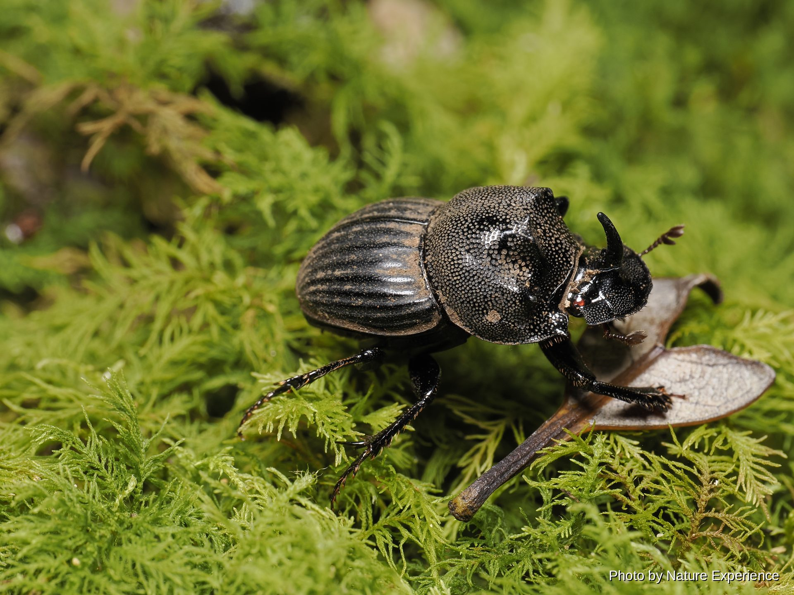
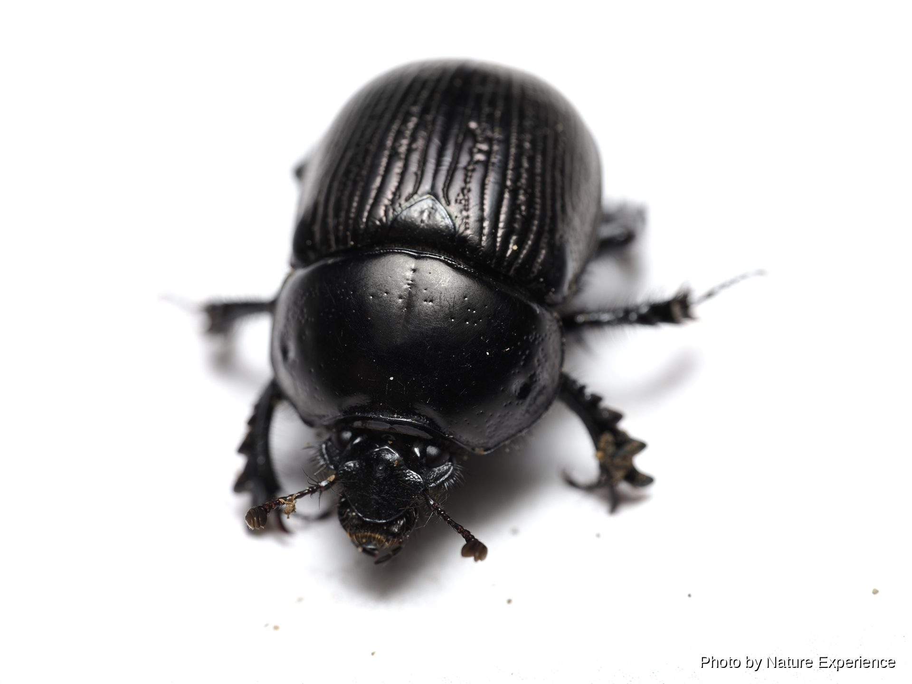
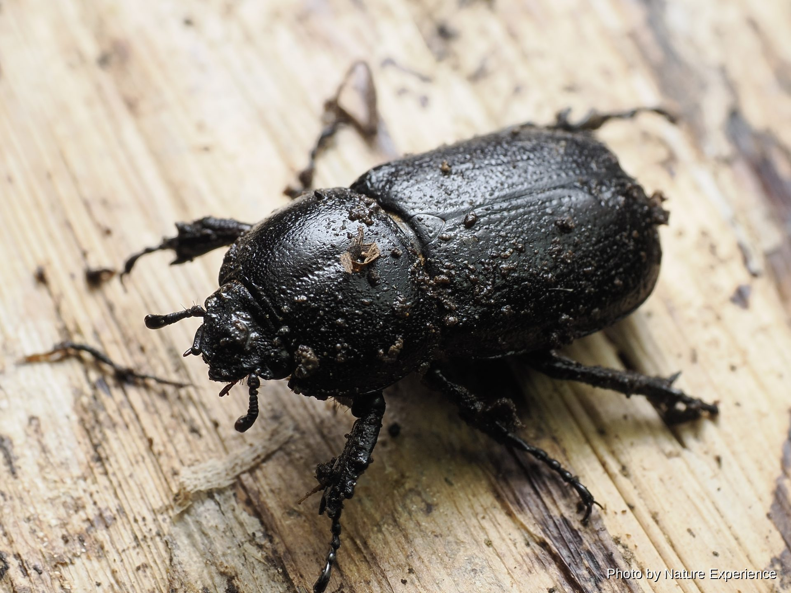
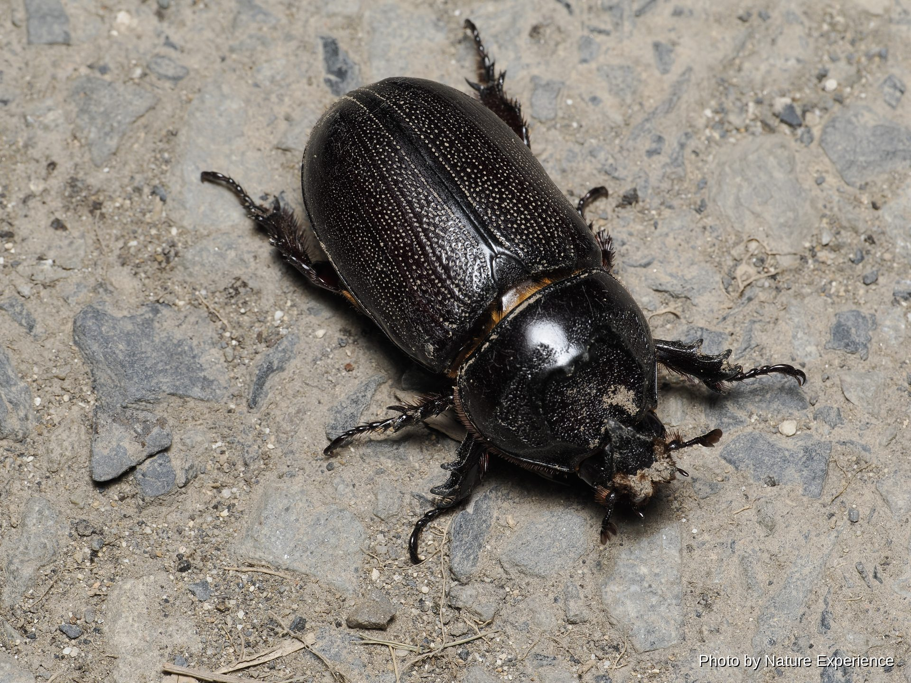
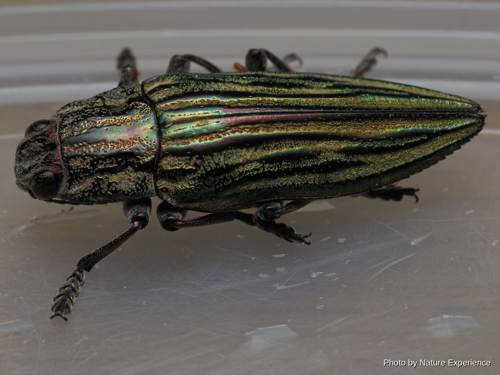
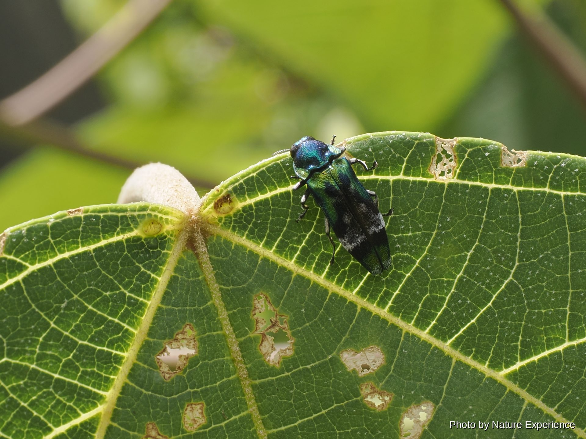
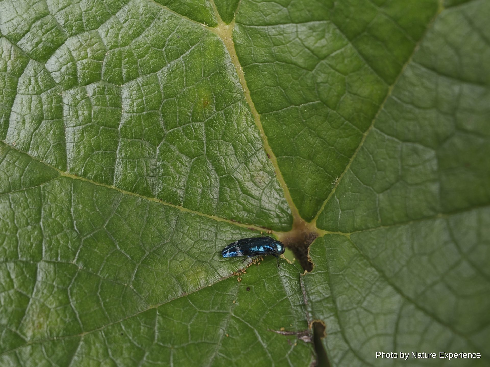
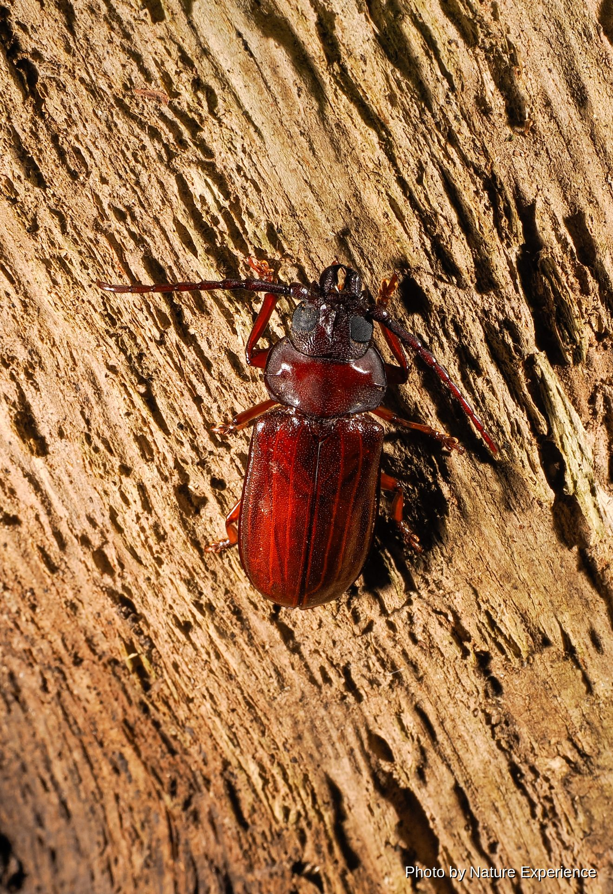

奄美で出会える甲虫
糞虫

奄美大島に生息する、採集記録が非常に少ない希少なマグソコガネの仲間。1986年に越智輝夫によって *Aphodius (Trichaphodius) atsushii* として記載されたが、その後の分類の見直しによって現在はGilletianus属として扱われている。アマミノクロウサギの糞を利用して暮らしていると考えられているが、生態についてはまだ分かっていないことが多く、採集例も限られる。

奄美大島・徳之島にのみ分布する固有種。1975年に桝元敏也によって *Aphodius ohishii* として記載されたが、現在はChilothorax属に含められている。アマミノクロウサギの糞を主な餌とし、秋から春にかけてよく見られる一方、夏場はほとんど姿を見せない。

体長13〜20mm。奄美大島・徳之島にのみ分布する固有種で、後翅が退化しており飛ぶことができない(徳之島には別亜種が分布)。夜間、山地の森の中を歩き回ってアマミノクロウサギの糞を探し、糞玉の下に穴を掘って前脚で後ずさりしながら引きずり込む習性を持つ。分布域がごく限られる上、移動性に乏しく過去の採集圧による個体数減少が大きいことから、環境省レッドリストで絶滅危惧II類(VU)に指定されている。
採集禁止(国立公園指定動物・条例指定希少野生動植物)、環境省レッドリスト絶滅危惧II類(VU)
体長20mmに達する、日本産センチコガネ科最大種。奄美大島・徳之島にのみ分布する固有種で、秋から冬にかけて活動し、アマミノクロウサギやイノシシの糞に集まる。糞を前脚で抱えるようにして後ずさりしながら引きずり、自分の巣穴まで運び込む独特の習性を持つ。鹿児島県レッドリストで準絶滅危惧に選定されている。
カブトムシの仲間

コカブト *Eophileurus chinensis* の奄美大島・徳之島・与路島・請島に分布する亜種。体長はオス20〜25mm、メス15〜20mmほど。平地から山地の森林に生息し、夜行性で林床や林道を歩く姿がよく見られるほか、初夏から秋の終わり頃にかけては樹液や灯火にも飛来する。成虫はほぼ通年見られるが、あまり個体数の多い種ではない。

インドシナ半島周辺を原産とする外来種。20世紀初頭に台湾からの輸入資材に紛れて石垣島に侵入したのが日本国内での最初の記録とされ、その後分布を北上させ、1991年には奄美大島・徳之島でも確認された。現在は南西諸島のほぼ全域で定着・自然繁殖している。ヤシ類やパイナップル、サトウキビなどの茎や芯に穿孔して加害する農業害虫として知られ、在来のカブトムシ類との競合も懸念されている。
外来種(1991年奄美大島・徳之島で初確認、ヤシ・パイナップル・サトウキビの害虫)

タマムシの仲間

体長24〜40mm。北海道から沖縄まで広く分布するウバタマムシの、奄美群島・沖縄諸島に分布する亜種。マツ類の枯れ木や弱った木を好み、幼虫はその材を食べて育つ。成虫は初夏から夏にかけて見られる。

体長約11mmの小型のタマムシ。奄美大島以南に分布する。ナカボソタマムシ属の仲間は日差しの強い夏場によく活動することが知られ、本種も6月から9月頃にかけて見られる。

瑠璃色の光沢を持つ小型のタマムシで、奄美大島で確認されている。ナカボソタマムシ属の仲間は日差しの強い夏場によく活動することが知られ、本種も6月から9月頃にかけて見られる。
カミキリムシの仲間

体長26〜34mm。関東・中部地方以南の本州から四国、九州、沖縄島以北の南西諸島(奄美大島・徳之島を含む)にかけて広く分布し、国外では朝鮮半島や中国南西部にも生息する。クスノキ、シイノキ、タブノキなどの樹木に集まり、夜行性で灯火にも飛来する。6月から8月頃によく見られる。

奄美大島にのみ分布する固有種。赤地に黒紋の美しい体色を持ち、深い森の中の立ち枯れ木に7月頃現れる。奄美大島で本種を採集したフェリエ神父にちなんで名付けられた。鹿児島県希少野生動植物の保護に関する条例により指定希少野生動植物に指定されており、捕獲・採集が禁止されている。